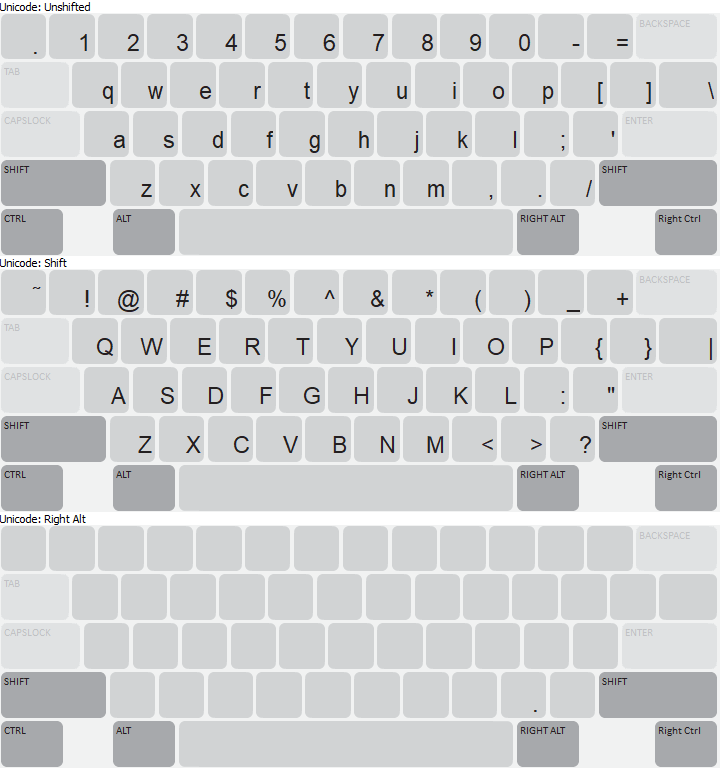
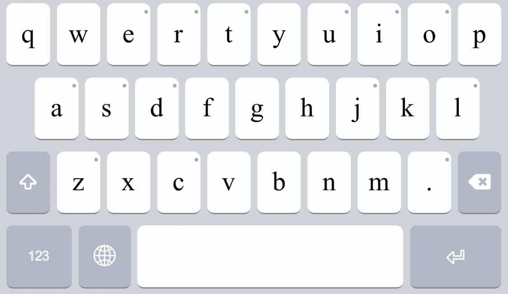
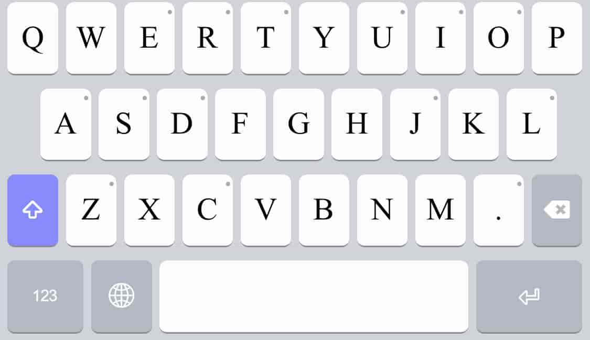
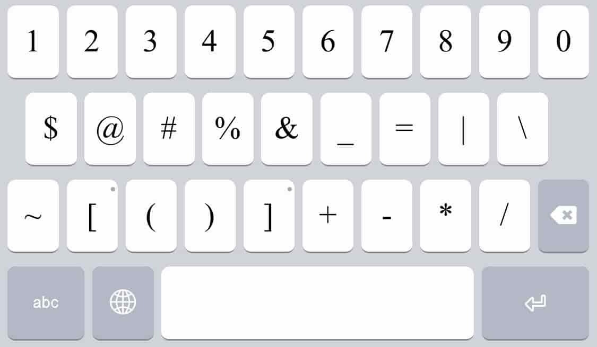
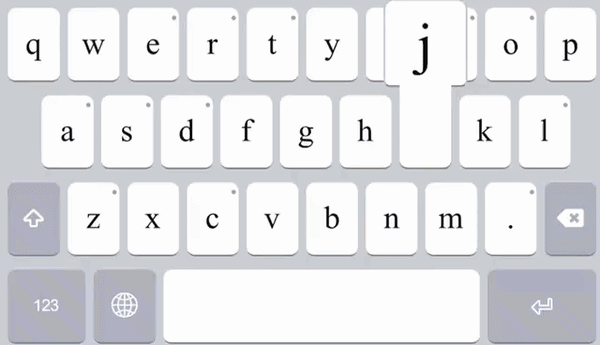

The Kaḷaṣamondr keyboard is created to type the Kalasha language with Roman (Latin) script. Allowing keyboard users to write in English and Kalasha without switching keyboards.
The Kaḷaṣamondr keyboards has a number of rules to differentiate itself from the standard US keyboard. At first glance, the keyboard only has the typical English characters we are accustomed to; however, there is one key that is different, the top left-hand key. This key has two functions: to represent retroflexion and/or nasalisation.
In the Kaḷaṣamondr keyboard, the US keyboard backquote symbol (`) is replaced with now represents retroflexion with a dot-under (combining with the preceding typed character), e.g. ḍ, ṭ, ṣ.
In the Kaḷaṣamondr keyboard, the US keyboard tilde symbol (SHIFT+~) now represents nasalisation with a tilde over the preceding typed vowel character, e.g. ã, ẽ, ĩ, õ, ũ, ạ̃, ẹ̃, ị̃, ọ̃, ụ̃
Note: the last five examples. They show that vowels can sometimes be both retroflex and nasalised. The dot-under retroflexion symbol should be typed first.
If you are familiar with In the language Kaḷaṣamondr keyboard, you'd know that there are characters which created from aspirated consonants are represented with an h that follows the consonant. That is, two characters together (a digraph), (sometimes with a dot) to produce with the second one being h, represent one aspirated phoneme. These characters are: bh, c̣h, dh, ḍh, gh, jh, kh, lh, ḷh, mh, ph, rh, th, ṭh, and ẓh.
When one both of these characters are typed, but then need to be deleted, there is a special rule that would make sure that both characters can be backspace-deleted together (behaving like a composed letter character), unless if, however, the next (a third) following letter character is typed, then the special phonemes individual characters return to a decomposed (separate) behaviour state and can be deleted one by one.
Exception: In the fricatives sh, zh, and ch, h does not represent aspiration. These digraphs will continue to represent these fricatives. Alternatively, a future option could be a caron (wedge) inserted above the s, z, or c by the ^ key, or these characters can be selected using long press on a mobile layout.
The affricates ts and dz are typed using these two separate characters. The aspirated affricate tsh (/t͡sʰ/) is typed using these three separate characters.
(See the key combinations below).
| Name | Lowercase | Keystroke | Uppercase | Keystroke |
|---|---|---|---|---|
| BACKTICK or BACKQUOTE | ` | `` | ||
| CARON (ˇ) | ||||
| LATIN LETTER C WITH CARON | ch (č) | ch^ | CH (Č) | CH^ |
| LATIN LETTER S WITH CARON | sh (š) | sh^ | SH (Š) | SH^ |
| LATIN LETTER Z WITH CARON | zh (ž) | zh^ | ZH (Ž) | ZH^ |
| DOT ( ̣ ) | ||||
| LETTER A WITH DOT BELOW | ạ | a` | Ạ | A` |
| LETTER C WITH DOT BELOW | c̣ | c` | C̣ | C` |
| LETTER D WITH DOT BELOW | ḍ | d` | Ḍ | D` |
| LETTER E WITH DOT BELOW | ẹ | e` | Ẹ | E` |
| LETTER I WITH DOT BELOW | ị | i` | Ị | I` |
| LETTER J WITH DOT BELOW | j̣ | j` | J̣ | J` |
| LETTER L WITH DOT BELOW | ḷ | l` | Ḷ | L` |
| LETTER O WITH DOT BELOW | ọ | o` | Ọ | O` |
| LETTER R WITH DOT BELOW | ṛ | r` | Ṛ | R` |
| LETTER S WITH DOT BELOW | ṣ | s` | Ṣ | S` |
| LETTER T WITH DOT BELOW | ṭ | t` | Ṭ | T` |
| LETTER U WITH DOT BELOW | ụ | u` | Ụ | U` |
| LETTER Z WITH DOT BELOW | ẓ | z` | Ẓ | Z` |
| TILDE (~) | ||||
| LETTER A WITH TILDE | ã | a~ | Ã | A~ |
| LETTER E WITH TILDE | ẽ | e~ | Ẽ | E~ |
| LETTER I WITH TILDE | ĩ | i~ | Ĩ | I~ |
| LETTER O WITH TILDE | õ | o~ | Õ | O~ |
| LETTER U WITH TILDE | ũ | u~ | Ũ | U~ |
| DOT BELOW + TILDE ( ̣ ) + (~) | ||||
| LETTER A WITH DOT BELOW AND TILDE | ạ̃ | a`~ | Ạ̃ | A`~ |
| LETTER E WITH DOT BELOW AND TILDE | ẹ̃ | e`~ | Ẹ̃ | E`~ |
| LETTER I WITH DOT BELOW AND TILDE | ị̃ | i`~ | Ị̃ | I`~ |
| LETTER O WITH DOT BELOW AND TILDE | ọ̃ | o`~ | Ọ̃ | O`~ |
| LETTER U WITH DOT BELOW AND TILDE | ụ̃ | u`~ | Ụ̃ | U`~ |
| Name | Lowercase | Keystroke | Uppercase | Keystroke |



